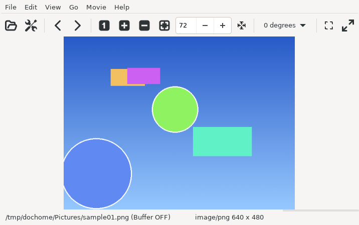
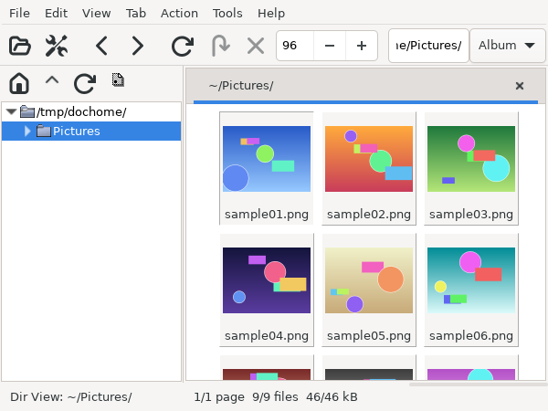
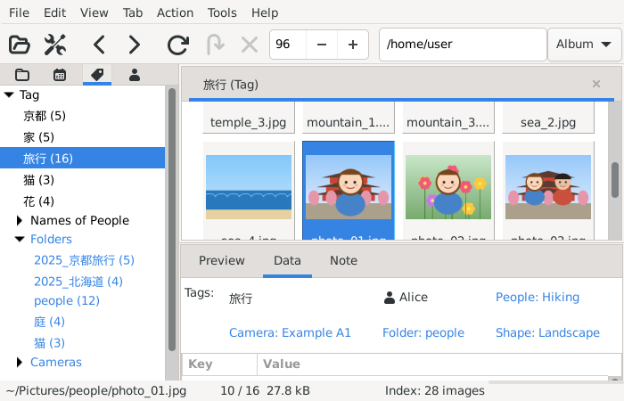
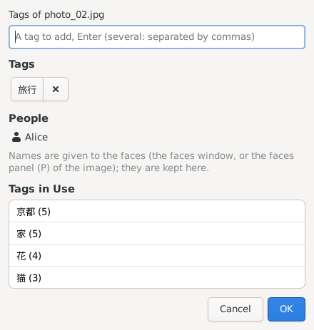
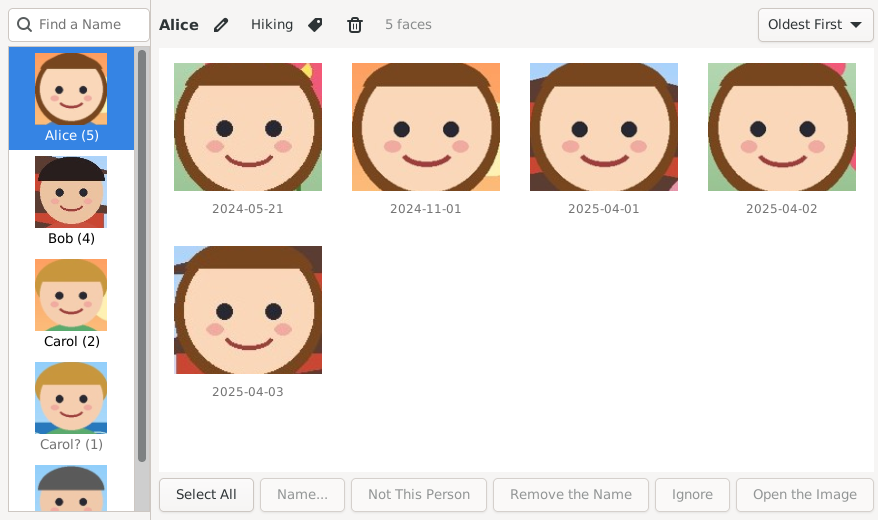
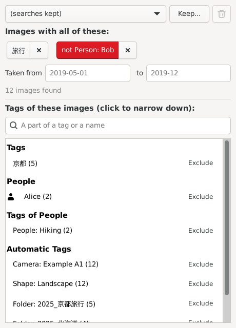
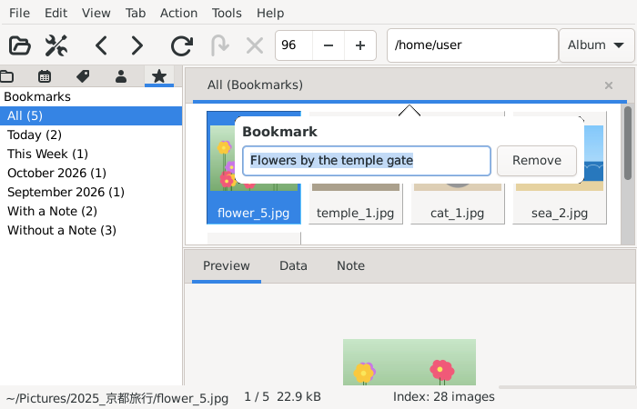

Typing a command like the following lets you view image files.
$ gimv [image files...]

Image Window (default settings)
Also, if you specify a directory name with the "-d" option as follows, all image files in the directory are opened as thumbnails in the thumbnail window.
$ gimv -d [directory]

Thumbnail Window (default settings)
If you specify image file names and directory names mixed together as follows, image files are opened in the image window and directories in the thumbnail window.
$ gimv -d hoge01.jpg ~/ ~/images images/hoge02.jpg\ /usr/share/pixmaps/ hogehoge.png ......
With the "-t" option, everything can be opened in the thumbnail window.
The other command line options are as follows.
$ gimv -h Copyright (C) 2001 Takuro Ashie Usage: gimv [OPTION...] [Image Files...] -d, --directory Scan a directory at startup -R, --recursive Scan directories recursively (use with "-d") -D, --scan-dot Read dotfiles when scanning directories (use with "-d") -e, --ignore-ext Ignore file name extension -s, --scale=SCALE Image scale in the image window [%] -b, --buffer=ON/OFF Keep the original image in memory -M, --menubar Show the menubar in the image window -T, --toolbar Show the toolbar in the image window -I, --imagewin Open an empty image window at startup -w, --thumbwin Open the thumbnail window at startup -i, --imageview Open all images in the image window -t, --thumbview Open all images in the thumbnail window -S, --slideshow Open the image files in a slideshow -W, --wait=TIME Slideshow interval (use with "-S") [sec] -v, --version Print version information -h, --help Show this message
To open a directory from the GUI, double-click it in the directory view, or type its path in the directory entry of the thumbnail window toolbar and press Enter (a new tab is opened only if the directory has images). You can also select directories in the file open dialog and press "Thumbnails of the selected files".
When "Directories to index" are given in [Preferences | Index], an indexer process (gimv-indexer) looks at the images below them while GImageView runs, and keeps their dates and tags in a database (~/.local/share/gimageview/index.db). The indexer runs at a low priority, and also takes in files added, moved and deleted while GImageView runs. Its progress is shown at the right end of the status bar ("Index: ..."). This needs a build with SQLite.

The Tag tab and a result tab
With an index, the side notebook of the thumbnail window (where the directory view is) gets the "Date" and "Tag" tabs (and "People" when faces can be found).
The images by the date they were taken, in years, months and days, newest first, with their numbers. The date is the EXIF date (built with gexiv2, the XMP date too), else a date in the file name, else the modification time.
The tags put by hand at the top, then "Names of People" and the groups of the tags put automatically (in blue: Folders, Cameras, Shape, Tags of People). The keywords other programs put are shown with the tags put by hand, one row for a name (a click opens the images with either; renaming and merging are for the tags put by hand, the keywords are changed in the program that put them).
A click on the text of a row shows its images in the result tab of the thumbnail view (one tab, whose contents are replaced). The middle button, or "Open in New Tab" of the right button menu, opens a new tab. Moving with the arrow keys opens nothing; Enter does. A result tab shows the file names only; the full path is in the tooltip and the status bar. "Open the Folder" of the right button menu opens the folder of the image. With tens of thousands of images, only the thumbnails near the part shown are made.
"Edit Tags..." of the right button menu of the thumbnail view, or [Edit | Edit Tags...], tags the images selected (one or more); in the image window [Edit | Edit Tags...] or the right button menu of the image, in the preview "Edit Tags..." in the right button menu, tags the image shown. A tag typed in the entry at the top is put on with Enter (several separated by commas; a tag may have "/" in it, like "travel/Kyoto"). The tags on the images are shown below it, × takes one away. "Tags in Use" at the bottom lists the tags most used first, narrowed by what is typed; a click puts one on. With several images, a tag only some of them have is shown as "Kyoto 2/5": a click puts it on all of them, × takes it away from all of them (left alone, it stays as it is on each). Enter with nothing typed is OK.

Editing tags
They are written in the "X-IMG-Tags:" line of the comment files (~/.gimv/comment), so they are kept when the index is made again. The names of the people given to the faces (the tags "person/NAME") are not among the tags: they are shown under "People" and kept as they are (names are given in the faces window or the faces panel). The "Tags:" row of the "Data" tab (comment window and preview) shows the tags of the image; a click opens the images with the tag.
Select a tag put by hand (or a tag of people) in the Tag tab and press F2, or choose "Rename... (F2)" in the right button menu. When the new name is there already, you are asked whether to merge them. The comment files are rewritten in the background. Ctrl+C copies the name of a row.
The index tags the images with their folder name, their camera (EXIF), their shape (portrait, landscape, square) and the keywords other programs put ([Preferences | Index | Automatic Tags]). The keywords are read from the XMP in the image (dc:subject), the IPTC keywords, and the sidecar files next to the image ("name.jpg.xmp" of digiKam, darktable, ... and "name.xmp" of Lightroom, ...). When there are only keywords with levels ("Season|Spring"), the last part is used. A sidecar file written again makes the index read the keywords of its image again. A keyword with the name of a tag put by hand is shown and looked for as that tag (the Tag tab, the Data tab, the search window, "Tags in Use" of Edit Tags). Built with gexiv2 (Exiv2), the date, the camera and the keywords are read from every format Exiv2 knows (JPEG, HEIF, PNG, WebP, TIFF, raw files, ...); without it, the EXIF of JPEG only and the XMP of JPEG, PNG, WebP and TIFF only. Folder names of numbers only and DCIM are not made tags. Other folder names can be added to "Folder Names Not Made Tags" ("*" and "?" can be used), or with "Do Not Make This Folder Name a Tag" in the right button menu of a folder in the Tag tab (not while the preferences window is open). The automatic tags are kept in the index only, not in the comment files.
New images in the indexed directories are notified on the desktop (the time to gather them, the interval and the folders not to notify are in [Preferences | Index | New Images]). The "Notices" button of the status bar shows the number of new images since the last time, and asks things such as whether to move the comments of images another program moved.
Images with comments (tags) that went missing are listed in a log for each start (~/.local/share/gimageview/missing-*.log). In [Tools | Missing Images...] their comments can be put on where the image went, put on another image, deleted, or the lines removed from the log.
gimv-faces looks for faces in the images of the "Folders to find faces in" of [Preferences | Index | Faces] (which must be in the index), and puts faces that look alike in groups. It runs after the rest of the index, slowly. This needs a build with OpenCV 4.8 or later, and the model files (OpenCV YuNet and SFace, about 40 MB) in ~/.local/share/gimageview/models (where to get them is shown on the preferences page).

The faces window
The people named (grouped by their tags), the guesses ("name?"), the unnamed groups, the other faces and the ignored faces. A click opens the images of the person; "Show the Faces..." of the right button menu opens the faces window.
The people (also the unnamed groups and the guesses) are listed at the left with a face and their name, and the faces of the one selected at the right. Select faces (Ctrl+A: all of them) and choose "Name...", "Right", "Not This Person", "Remove the Name" or "Ignore". A double click opens the image. The buttons of the heading rename the person (merging two people of the same name), copy the name, edit the tags of the person and delete the person. The faces can be sorted oldest first, newest first, or least like the person first (to find the faces put there by mistake).
"Edit Faces (People)" (P) in the right button menu of an image view shows the faces of the image at its right, where they can be named too. Press "+" and drag over the image to add a face that was not found (a small face, for example). The right button menu of a face copies it to the clipboard.
The names given to the faces are written in the comment files of the images too, as the tags "person/NAME"; when the index is made again, the names are given back to the faces from them. The "Names of People" group of the Tag tab shows these tags.
Tags put on people (the group they belong to, for example), with "Tags of the Person..." in the faces window. They are kept in the index only, and used by the "Tags of People" group of the Tag tab and the groups of the People tab. Renaming one renames it for everyone who has it.

The search window
[Tools | Search Images...] finds images of the index by several conditions.
A click on a tag of the list below (names of people and automatic tags too) adds it as a condition, shown as a chip at the top. Typing in the entry narrows the list; Enter adds the first tag. The images must have all the chips (and). A click on a chip turns it into "excluded" (red): the images with that tag are left out. × removes a chip.
"Taken from ... to" limits the date taken (a year or a month alone can be given).
With conditions, the list below shows the tags of the images found, by kind and with their numbers: a click narrows the search further, and the "exclude" button of a row leaves those images out.
The images found are shown in a tab of the thumbnail window.
"Keep..." keeps the conditions under a name, to be chosen again in the list at the top (~/.gimv/searches); the trash button deletes one.
Ctrl+F in a list (the directory view, the detail view, the Data tab, the lists of the preferences, ...) opens a search entry at its top. The row beginning with what is typed (else having it) is selected. Up and Down go to the one before and the next, Enter closes it on the row, Escape closes it (and so do 5 seconds without typing). In the index tabs, the rows not opened are looked at too.
At the left, the full path of the focused image; in the middle, its position ("12 / 33") and its file size. With several images selected, their number and their total size ("5 selected 812 kB"). At the right end, the state of the index and the notices.
Thumbnails can be read and written in the format of the freedesktop.org Thumbnail Managing Standard (~/.cache/thumbnails), shared with other programs ([Preferences | Thumbnail Cache]).
The thumbnails of the images GdkPixbuf reads (JPEG, PNG, ...) are made in worker threads, so the window can be used while they are made. A JPEG's embedded (EXIF) thumbnail is used when it is big enough ("Making thumbnails" in [Preferences | Thumbnail Cache]).
Thumbnails are turned and flipped by the EXIF orientation, and kept so in the cache. When an image was turned or flipped in an image view (and that is remembered), its thumbnail is shown so (not kept in the cache).
"Copy the Image to the Clipboard" (Shift+Ctrl+C) in the right button menu of an image view copies the image shown, to be pasted in other programs.
"Flip Horizontally" (X) and the rotation of an image view are remembered for each image and restored when it is opened again ("Remember the rotation and flip of each image" in [Preferences | Image Window | Image]).
The "Data" tab of the preview and of the comment window shows the comments written in the image file itself (JPEG, PNG, GIF, MAG) in italics (shown only).
"Remove Item" of the "Data" tab (Delete in the list) removes the item selected, kept by "Save". "Delete Comment..." below deletes, after asking, the data and the note of the image; the tags (X-IMG-Tags) are kept. The row of the tags is only shown: the tags are edited with "Edit Tags...".
"Open the Folder" in the right button menus of the thumbnail view and the image view opens the folder of the image.
Images can be bookmarked to look at them again later, in the indexed directories or not. The bookmarks are kept in ~/.gimv/bookmarks (apart from the index database: making the index again keeps them).

The Bookmarks tab and a note
Select images in the thumbnail view (one or more) and choose [Edit | Bookmark...] or "Bookmark..." in the right button menu; in the image window [Edit | Bookmark...], in the preview "Bookmark..." in the right button menu. The images are bookmarked at once, and a field for a note comes up. It can be closed with Escape without writing anything (a note can be written later). Enter, or a click elsewhere, keeps the note written. Chosen on a bookmarked image, it changes the note, or "Remove" takes the bookmark off.
No key is given by default. With lines like these in ~/.gimv/keyaccelrc (Ctrl+K here; a line starting with ";" does nothing), the key bookmarks from the next start.
(gtk_accel_path "<ThumbWinMainMenu>/Edit/Bookmark..." "<Control>k") (gtk_accel_path "<ImageWinMainMenu>/Edit/Bookmark..." "<Control>k") (gtk_accel_path "<ThumbWinPreviewPop>/Bookmark..." "<Control>k")
The "Bookmarks" tab (a star) next to the directory view lists the bookmarks by the day they were added (Today, Yesterday, This Week, then by month), and "All", "With a Note", "Without a Note", with their numbers. A click on a row opens them in the result tab, the newest first (the file names only, as the index tabs). Choosing a sort in the menu sorts them so.
The tooltip of the thumbnail of a bookmarked image starts with "★ the note" ("★ Bookmarked" without a note).
An image renamed or moved with GImageView keeps its bookmark. In the indexed directories, the bookmarks also follow images and folders moved or renamed by other programs. Other images not found any more are counted in "Not Found" of the tab.